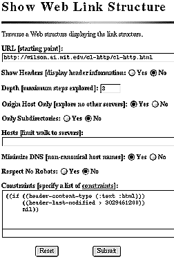
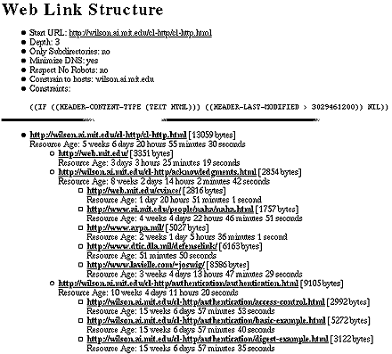
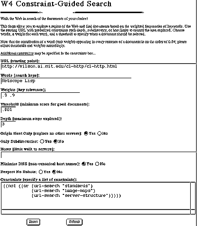
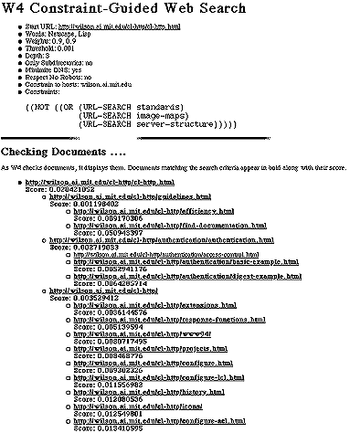

Proceedings of the Dynamic Objects Workshop at Object World East, Boston, Massachusetts, May 5-6, 1996
Abstract: A Web walker for the Hypertext Transfer Protocol (HTTP) implements a constraint posting control architecture. The Web walker uses a declarative and extensible vocabulary of constraints to characterize traversals of Web structures. Starting from a root resource, the walker recursively follows all hyperlinks whose associated resource satisfies the constraints guiding the walk. Constraints are sorted according to efficiency class before application to candidate resources. This constraint ordering conserves computational and network resources. As the walker traverses the structure it performs operations that are specified in a declarative and extensible action vocabulary. Taken together, a set of constraints and a set of actions comprise an activity, which can be named and reused.
Several Web-accessible applications use this constraint-guided framework:
Keywords: Actions, Common Lisp, Constraints, Constraint Posting, HTML, HTTP, Intelligent Agents, Internet, Resource Discovery, Technology, Servers, Web Robot, Web Walker, World Wide Web.
Hypertext: http://www.ai.mit.edu/projects/iiip/doc/CL-HTTP/w4/w4.html
Postscript: http://www.ai.mit.edu/projects/iiip/doc/CL-HTTP/w4/w4.ps
As the World Wide Web has grown, Web walkers have settled into two general applications: site maintenance and high-volume indexing. In these roles, the walkers have been tuned for specific activities that are applied uniformly over Web regions. This paper introduces a new constraint-posting architecture for Web walkers that yields greater flexibility as it decouples control of Web traversals from actions applied to Web regions. The goal is to facilitate reuse and sharing of both control and action abstractions, and thus, to open the way for a new generation of reconfigurable Web walkers that allow people or intelligent agents to ``power browse'' the Web.
The W4 Constraint-Guided Web Walker is a second generation Web walker intended for traversing well-specified regions of the World Wide Web and performing any variety of actions. Control of the walk is specified with an extensible vocabulary of constraints that limit enumeration of Web resources. Actions applied to each accepted resource are specified by an extensible action vocabulary. Conditional branching in constraints and actions makes possible adaptive responses to Web topology. Most importantly, constraint and action abstractions enforce a separation of control from action as they encourage reuse of control and action abstractions. The W4 Web walker employs an architecture isomorphic to one originally developed for a graph walking system for knowledge representation in the RELATUS Natural Language System (Mallery, 1991). W4 builds on a basic HTTP client that is distributed with the Common Lisp Hypermedia Server (Mallery, 1994). W4 extends the abstractions of this server and basic client to accessing Web resources and walking Web structures.
The W4 Web walker is an interpreter for graph structures comprised by resources accessible via the Hypertext Transfer Protocol (Berners-Lee, et alia, 1996). A web traversal corresponds to the application of an activity to a root uniform resource indicator (URI) (Berners-Lee, 1994; Berners-Lee et alia, 1994). As hyperlinks are extracted from resources with relevant content types -- such as documents using the Hypertext Markup Language (Berners-Lee, et alia, 1995) -- a filtering process prunes out all candidates that do not satisfy formulae in the constraint language. Actions are then performed on successful candidates. All the information required to guide a particular traversal and perform actions is stored in a named activity object.
An activity executes the following loop at each step in the traversal of a structure:
Walking a Web structure is a graph walk in Web space. A Web walk is isomorphic to a tree descent, where starting from an initial node, inferiors are recursively enumerated (steps 1 and 2), and possibly visited (step 4). Although tree descent algorithms are exponential in form, here constraints may bound the absolute number of URIs enumerated and visited. Thus, the computational work required to complete a walk is given by the guiding constraint formula and the actual topology of the region traversed. In practice, network factors like HTTP response latency and transfer rates will contribute significant constant factors to the time required to execute an activity at each visited node.
A good set of constraints narrows the scope of the Web walk to the URI's of interest and produces a more tractable walk than might otherwise be achieved using conventional Web walkers. Thus, the goal of constraint-guided Web walking is to devise a constraint formula that generates the smallest, but compete, set of candidate URIs, and so, performs its activity using the minimum computational and network resources.
As discussed below, declarative constraints can be ordered for application in ways that also conserve computational and network resources as each ply selects candidate URIs
Constraints are instances of constraint types. Constraint types serve as templates governing the behavior of constraint instances. They hold general-purpose functionality governing their instances while their instances store specializing parameters.
There are two general classes of constraint types:
Constraint instances are specialized into subclasses according to computational efficiency. A sort based on efficiency subclass serves as a first-pass for ordering constraints. The ordering is intended both to prune candidate URIs as fast as possible and to do so with minimum computation and network access. The current set of efficiency classes for constraints appear below in decreasing order of efficiency.
Constraint sets bundle collections of constraints. Operations on constraints are typically done via operations on constraint sets. Before a set of candidate URIs can be filtered by the constraints of a constraint set, those constraints need to be ordered for computational efficiency. Constraint sets filter URIs as follows:
Constraint sets are ordered only once; thereafter they can be applied to enumerated URIs without further reordering because the efficiency characterization is independent of the actual resources. Of course, if new constraints are added to a constraint set, it requires reordering.
With the exception of resource constraints, constraint classes should almost always involve algorithms with good complexity properties, typically algorithms linear in the number of URIs, or better. In contrast, resource constraints may apply any algorithm to the resource body, and consequently, may require secondary ordering to ensure that cheap resource constraints prune down the candidate URIs to a minimum before more expensive ones are applied. Additionally, the computational cost of resource constraints may depend on the actual content of the resource. Neither secondary ordering of resource constraints nor constraint ordering informed by their content has been implemented.
Web walking is a search process. The current W4 implementation examines a Web region depth first with sorting of candidate URIs at each level, but not globally. Extensions for breadth-first, best-first, and other global search options are in progress.
The current implementation runs in a single thread. Multiple cooperating threads exploring different parts of the search space is also under consideration.
New constraint types are defined with DEFINE-CONSTRAINT-TYPE.
In Definition 1, the second argument provides the
constraint efficiency class and the documentation for the constraint. The
third argument is the lambda list passed to the body during constraint
application.
|
Each activity contains a set of actions that are applied to URIs that have passed its associated constraint set. Actions are instances of action types, whose behavior is parameterized by their arguments. Two general classes of action types are currently defined:
Action types are defined using DEFINE-ACTION-TYPE. In Definition 2, the second argument specifies whether
the action is a primary or encapsulating action. The third argument is the
lambda list passed into the body during action execution.
|
Although the constraints used by the activity to enumerate the Web region may cover the correct resources, it may not make sense to apply actions to each URI. Consequently, actions will often test the URI against their own set of constraints to select the correct action to apply to a URI, or to take no action at all. In these cases, the scope of the Web walk can be wider than the scope of particular actions.
Activities collect a set of constraints to guide a Web walk and a
set of actions that are performed on visited URIs. A Web walk is initiated by
applying the generic function WALK to a URI and an activity. One
can think of an activity as a complex argument to a function,
containing a number of interrelated parameters that are invoked in different
ways during a recursive process. Rather than pass all these arguments
separately, here they are bundled into named objects that can be reused.
Activities can be defined with DEFINE-ACTIVITY or they can be
created on the fly with the macro WITH-ACTIVITY. In each case,
textual specifications for constraints and actions are passed to routines that
allocate corresponding objects used during the walk. Definition 3 shows how an activity is defined to
display the headers of all resources within two hyperlinks from a root URI.
The action WALK-INFERIORS is a built-in action that reinvokes the
interpreter on the current URI to explore the next level of the search space.
(define-activity
trace-walk
:documentation "Traces the Web Walking activity."
:constraint-set ((no-cycles) (depth 2)
(header-robots-allowed))
:operator "JCMa@ai.mit.edu"
:actions ((trace) (trace-headers) (walk-inferiors))
:report-stream *standard-output*)
|
Several simple applications were implemented to test the W4 framework for constraint-guided Web walking. These applications are independently useful and comprise a start on a library of actions.
A simple application walks Web structures under a set of constraints and displays the resources traversed. This Web mapper is useful for viewing the link branching structure associated with a Web document and for testing constraint formulae to see what web region they select. This link mapper is invoked via a form over HTTP and reports its results back to the Web Client. Figure 1 shows the form that invokes the Web mapper. Some parameters for several standard constraints are captured via form input fields, whereas more specialized constraints are passed in via the constraints field. In Figure 1, a conditional constraint is used to suppress any HTML resources which were created before January 1, 1996 (specified in seconds since 1900). Consequently, the results shown in Figure 2 contain no HTML resources modified less recently than January 1, 1996.
|  |
|  |
As an example of the kind of application that can be rapidly developed using this web-walker, we developed a constraint-guided search tool. This tool performs a local best-first search on the area of the Web satisfying the specified constraints. The search employs the Salton (1980; 1991) algorithm for classifying documents according to keywords; a document score is computed by summing normalized frequency counts for the keywords. The algorithm is quite simple, as follows: given a URI, the corresponding document is scored (if text) and returned if the score is above a threshold. Then, a score is computed for all of the documents pointed to by links in the current document. These scores are used to order the links for traversal. The process then continues until the applicable section of Web-space is exhausted (typically by a constraint on the depth of the search).
|  |
One of the most important aspects to note about this application is the relative ease with which it was developed. Leveraging the substrate provided by the CL-HTTP server and the elegant constraint structure of the walker described herein, the code for this application is minimal beyond the actual scoring code and some pretty-printing to provide a forms interface (see figures below). Using this substrate, it should be clear that arbitrary search methodologies employing arbitrary document scoring algorithms can be implemented rapidly and easily.
|  |
Later improvements to this application will enable better scoring techniques than the Salton algorithm as well as improving on the search control; because the descent sorting is local, the current algorithm presumes a fairly high degree of informational coherence on the site(s) being walked. It would be better to sort the links for descent based on the score of the branch of the walk tree that link belongs to; a global best-first search.
The W4 Constraint-Guided Web-Walker can be configured for use as a World-Wide Web archiving tool. When the walker processes a node, the archiver stores the URI content on the local file-system, creating directories that mirror the URI hierarchy. HTML documents are passed through a parser that remaps hyperlink information to the file-system, allowing the user to navigate the structure with a conventional web browser. Hyperlinks pointing to URIs on other hosts are preserved, allowing a seamless transition back to the web when a resource is not mirrored locally.
The archiver activity is guided by a fairly simple set of constraints, consisting of a URI-host, allowed content-types and a maximum depth. When mirroring a subtree on a large site, a maximum depth setting is important since documents often reference the top node of a site. Given an initial pathname on the local file-system, the archiver creates a directory whose name is a unique representation for the target host. The URI hierarchy is then mirrored beneath this directory.
The data from a cached HTML document is passed through a stream-based parser/remapper before being output to disk. If a BASE element is found, its original value is stored and a local file pathname put in its place. If no BASE reference exists, one is created. Since most browsers fail to correctly parse a file reference in a BASE element, the pathname can only be specified up to the directory representing the remote host. Any path information from the original BASE element must be added to each individual hyperlink reference. If an absolute URI reference points to a location on the host being walked, it is parsed to a relative URI. If it points to a location on another host, the full URI is retained. Once the BASE element and all hyperlink references have been remapped in this manner, an HTTP browser can successfully navigate the file structure on disk.
An archiving walker has several immediate applications:
The present implementation lacks a number of desirable features that will be incorporated over the coming months.
A flexible constraint-posting architecture for graph walking from the field of knowledge representation has been transferred to the domain of Web walking. The architecture defines an interpreter that accepts declarative constraint formulae which it uses to filter URIs to which declarative actions are applied. The constraint abstraction makes possible sorting of constraints according to their computational efficiency. This not only allows the Web walker to proceed at a faster pace, but more importantly, it allows irrelevant structure to be ignored. Declarative actions allow multiple tasks to be performed in single walks, which thereby reduces utilization of network resources. Both constraints and actions can be collected in named activities that can be recalled when needed again.
W4 provides an environment for creating and reusing abstractions that describe regions of the World Wide Web and perform actions over them. The initial vocabulary provided with W4 can be extended to support intelligent agents performing resource discovery on the Web.
The present implementation is about 3000 lines of Common Lisp code, not including the applications. It runs on the same platforms as the Common Lisp Web Server. The source code will be distributed with the web server in future releases.
This paper was improved by comments from Sue Felshin, and Mark Nahabedian. The Web walker was designed and implemented by John C. Mallery. Andrew Blumberg designed and implemented the Salton-style search application. Christopher R. Vincent designed and implemented the Web Archiving application.
This paper describes research done at the Artificial Intelligence Laboratory of the Massachusetts Institute of Technology. Support for the M.I.T. Artificial Intelligence Laboratory's artificial intelligence research is provided in part by the Defense Advanced Research Projects Agency of the Department of Defense under contract number MDA972-93-1-003N7.
Berners-Lee, T., ``Universal Resource Identifiers in WWW: A Unifying Syntax for the Expression of Names and Addresses of Objects on the Network as used in the World-Wide Web,'' IETF RFC 1630, CERN, June 1994.
Berners-Lee, T., D. Connelly, ``Hypertext Markup Language - 2.0,'' draft IETF RFC, M.I.T. Laboratory for Computer Science, September 22, 1995.
Berners-Lee, T., L. Masinter, M. McCahill, ``Uniform Resource Locators (URL),'' IETF RFC 1738, CERN, Xerox PARC, University of Minnesota, December 1994.
Fielding, R., H. Frystyk, T. Berners-Lee, J. Gettys, J. C. Mogul, ``Hypertext Transfer Protocol -- HTTP/1.1,'' draft IETF RFC, M.I.T. Laboratory for Computer Science, April 22, 1996.
Koster, Martijn, ``World Wide Web Robots, Wanderers, and Spiders,'' hypertext page on Web walkers at: http://info.webcrawler.com/mak/projects/robots.html.
Mallery, J. C., `` Semantic Content Analysis: A New Methodolology for the RELATUS Natural Language Environment,'' in V. M. Hudson, ed., Artificial Intelligence and International Politics, Boulder: Westview Press, 1991: 347-385.
Mallery, J. C., `` A Common Lisp Hypermedia Server,'' Proceedings of The First International Conference on The World-Wide Web, Geneva: CERN, May 25, 1994.
Salton, G., ``Automatic Information Retrieval,'' Computer, 1980, 13 (5): 41-57.
Salton, G., ``Developments in Automatic Text Retrieval,'' Science, 1991, 253: 974-980.
These appendices describe the series of constraints and actions that have been defined for W4 and used in some examples described in this paper. Each entry gives the name of the constraint or action, its type in square brackets, and any arguments that it accepts.
(&REST CONSTRAINTS)
(DEPTH)
(COMPARATOR SIZE)
(SIZE &OPTIONAL (DEFAULT T))
(CONTENT-TYPE-SPEC)
(COMPARATOR UNIVERSAL-TIME)
(COMPARATOR UNIVERSAL-TIME)
(HEADER-KEYWORD PREDICATE)
(MINIMUM MAXIMUM)
(or equal to) MINIMUM and MAXIMUM.
Fails if LAST-MODIFIED header is not available. MINIMUM and MAXIMUM are universal times.
()
(PREDICATE)
(ANTECEDENT CONSEQUENT ALTERNATE)
() (CONSTRAINT-SET-OR-CONSTRAINT)
(&REST CONSTRAINTS)
(PREDICATE)
(SUBSTRING)
(CLASS)
(DIRECTORY-PATH) (EXTENSION)
(HOST)
(NAME) (DIRECTORY-PATH)
(PORT) (HOST)
(PREDICATE)
(SCHEME)
(SUBSTRING)
(DIRECTORY-PATH)
(STREAM)
(STREAM)
(STREAM)
(STREAM)
(STREAM STYLE)
(STREAM)
(STREAM)
(THRESHOLD WORDS WEIGHTS STREAM)
()
()
()
(WORDS WEIGHTS)
(PREDICATE)